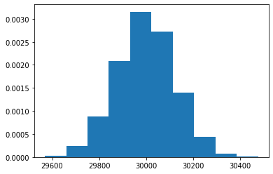

Some tests, do not commit#
[1]:
%load_ext autoreload
[2]:
%autoreload
import numpy as np
from pydvl.shapley import (
permutation_montecarlo_shapley,
truncated_montecarlo_shapley,
serial_truncated_montecarlo_shapley,
combinatorial_montecarlo_shapley,
permutation_exact_shapley,
combinatorial_exact_shapley,
)
from pydvl.utils import map_reduce
from pydvl.utils.numeric import lower_bound_hoeffding
from pydvl.utils.parallel import available_cpus
from sklearn.linear_model import LinearRegression
from functools import lru_cache, partial
from typing import Generator
import matplotlib.pyplot as plt
[5]:
from tests.conftest import check_exact, check_rank_correlation, linear_dataset
---------------------------------------------------------------------------
ModuleNotFoundError Traceback (most recent call last)
<ipython-input-5-1a906ac9fab1> in <module>
----> 1 from tests.conftest import check_exact, check_rank_correlation, \
2 linear_dataset
ModuleNotFoundError: No module named 'tests.conftest'
[ ]:
data = linear_dataset()
model = LinearRegression()
scoring = "neg_mean_squared_error"
Exact computations#
[2]:
values_c = combinatorial_exact_shapley(model, data, scoring, progress=False)
values_p = permutation_exact_shapley(model, data, scoring, progress=False)
check_exact(values_c, values_p, eps=0.01)
---------------------------------------------------------------------------
NameError Traceback (most recent call last)
<ipython-input-2-01ffd30b821f> in <module>
----> 1 values_c = combinatorial_exact_shapley(model, data, scoring, progress=False)
2 values_p = permutation_exact_shapley(model, data, scoring, progress=False)
3 check_exact(values_c, values_p, eps=0.01)
NameError: name 'combinatorial_exact_shapley' is not defined
Montecarlo#
[3]:
num_cpus = min(available_cpus(), len(data))
num_runs = 3
delta = 0.01
eps = 0.04
score_range = 2
n_iterations = num_(delta, eps, score_range)
n_iterations
---------------------------------------------------------------------------
NameError Traceback (most recent call last)
<ipython-input-3-04ab1a8df9d0> in <module>
----> 1 num_cpus = min(available_cpus(), len(data))
2 num_runs = 3
3 delta = 0.01
4 eps = 0.04
5 score_range = 2
NameError: name 'available_cpus' is not defined
Serial Monte Carlo shapley#
[4]:
vv, hh = serial_truncated_montecarlo_shapley(
model,
data,
scoring=scoring,
bootstrap_iterations=20,
score_tolerance=0.1,
min_steps=7,
value_tolerance=1e-3,
n_iterations=n_iterations,
progress=True,
)
---------------------------------------------------------------------------
NameError Traceback (most recent call last)
<ipython-input-4-efb93e4272c9> in <module>
----> 1 vv, hh = serial_truncated_montecarlo_shapley(
2 model, data, scoring=scoring, bootstrap_iterations=20, score_tolerance=0.1, min_steps=7,
3 value_tolerance=1e-3, n_iterations=n_iterations, progress=True)
NameError: name 'serial_truncated_montecarlo_shapley' is not defined
[ ]:
check_rank_correlation(vv, values_c, threshold=0.9)
Permutation MC Shapley#
[ ]:
_fun = partial(
permutation_montecarlo_shapley,
model=model,
scoring=scoring,
n_iterations=n_iterations,
progress=True,
)
results = map_reduce(_fun, num_jobs=num_cpus, num_runs=num_runs)
for vv, _ in results:
print(f"Total:{sum(vv.values())}")
check_rank_correlation(vv, values_c, threshold=0.9)
Combinatorial MC Shapley#
[ ]:
_fun = partial(
combinatorial_montecarlo_shapley,
model=model,
scoring=scoring,
n_iterations=n_iterations,
progress=True,
)
results = map_reduce(_fun, num_jobs=num_cpus, num_runs=num_runs)
for vv, _ in results:
print(f"Total:{sum(vv.values())}")
check_rank_correlation(vv, values_c, threshold=0.9)
Truncated MC Shapley#
[ ]:
from tqdm.auto import trange
fun = partial(
truncated_montecarlo_shapley,
model=model,
data=data,
scoring=scoring,
bootstrap_iterations=10,
min_scores=5,
score_tolerance=0.1,
min_values=10,
value_tolerance=eps,
n_iterations=100,
num_workers=num_cpus,
progress=True,
)
results = []
for i in trange(num_runs):
results.append(fun(run_id=i))
Generating random sets#
[11]:
from pydvl.utils.parallel import MapReduceJob
@lru_cache
def subset_probabilities(n: int, num_jobs: int = 1):
"""Returns the normalized set of probabilities of sampling a subset of
size k for k=0,...n, uniformly from the powerset 2**n"""
def sub(sizes: np.ndarray) -> np.ndarray:
# print(f"Doing stuff for {len(sizes)} items")
# FIXME: is the normalization ok?
return np.fromiter(
(np.math.comb(n, j) / 2**n for j in sizes), dtype=float, count=len(sizes)
)
if num_jobs is None or num_jobs < 2:
return sub(np.arange(n + 1))
fun = MapReduceJob.from_fun(sub, reducer=np.concatenate)
p = map_reduce(fun, np.arange(n + 1), num_jobs=num_jobs)[0]
return p
[12]:
def random_powerset(
s: np.ndarray, max_subsets: int = None, num_jobs: int = 1
) -> Generator[np.ndarray, None, None]:
"""Uniformly samples a subset from the power set of the argument, without
pre-generating all subsets and in no order.
See `powerset()` if you wish to deterministically generate all subsets.
:param s: set to sample from
:param max_subsets: if set, stop the generator after this many steps.
:param num_jobs: This function accepts arbitrarily large values for n.
However, when n is in the tens of thousands, it can take very long to
compute the sampling probabilities for the set sizes. For this reason, it
is possible to run this step in parallel with num_jobs. These
probabilities will be cached for successive invocations.
"""
if not isinstance(s, np.ndarray):
raise TypeError
n = len(s)
total = 1
if max_subsets is None:
max_subsets = np.inf
p = subset_probabilities(n, num_jobs)
while total <= max_subsets:
k = np.random.choice(np.arange(n + 1), p=p)
subset = np.random.randint(n, size=k)
yield s[subset]
total += 1
[19]:
s = np.arange(0, 60000)
ss = []
for x in random_powerset(s, max_subsets=10000, num_jobs=12):
ss.append(len(x))
[20]:
plt.hist(ss, density=True);

[21]:
subset_probabilities.stats()
[21]:
CacheInfo(hits=1, misses=3, maxsize=128, currsize=3)
[ ]:
len(ss)